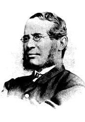
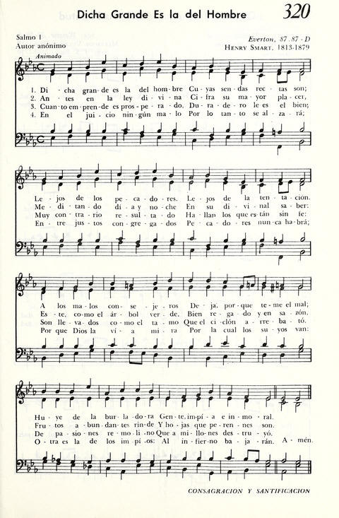

|
|
112萬有歸榮 |
|
Lord, you do not need our praises: |
|
|
|
|
|
|
|

新普天頌讚 #112 萬有歸榮 聖詩分析 譚靜芝博士 廣東話 https://www.hkchurchmusic.org/index.php/component/allvideoshare/video/hup112
| Short Name: | Fred Pratt Green |
| Full Name: | Green, Fred Pratt, 1903-2000 |
| Birth Year: | 1903 |
| Death Year: | 2000 |

The name of the Rev. F. Pratt Green is one of the best-known of the contemporary school of hymnwriters in the British Isles. His name and writings appear in practically every new hymnal and "hymn supplement" wherever English is spoken and sung. And now they are appearing in American hymnals, poetry magazines, and anthologies.
Mr. Green was born in Liverpool, England, in 1903. Ordained in the British Methodist ministry, he has been pastor and district superintendent in Brighton and York, and now served in Norwich. There he continued to write new hymns "that fill the gap between the hymns of the first part of this century and the 'far-out' compositions that have crowded into some churches in the last decade or more."
--Seven New Hymns of Hope , 1971. Used by permission.
| Tune: | EVERTON |
| Composer: | Henry Thomas Smart (1813-1879) |
Tune Information
| Title: | EVERTON (Smart) |
| Composer: | Henry Thomas Smart (1867) |
| Meter: | 8.7.8.7 |
| Incipit: | 34516 71545 31222 |
| Copyright: | Public Domain |
| Short Name: | Henry Thomas Smart |
| Full Name: | Smart, Henry Thomas, 1813-1879 |
| Birth Year: | 1813 |
| Death Year: | 1879 |
Henry Smart (b. Marylebone, London, England, 1813; d. Hampstead, London, 1879),

a capable composer of church music who wrote some very fine hymn tunes (REGENT SQUARE, 354, is the best-known).
Smart gave up a career in the legal profession for one in music. Although largely self taught, he became proficient in organ playing and composition, and he was a music teacher and critic. Organist in a number of London churches, including St. Luke's, Old Street (1844-1864), and St. Pancras (1864-1869), Smart was famous for his extemporizations and for his accompaniment of congregational singing. He became completely blind at the age of fifty-two, but his remarkable memory enabled him to continue playing the organ. Fascinated by organs as a youth, Smart designed organs for important places such as St. Andrew Hall in Glasgow and the Town Hall in Leeds. He composed an opera, oratorios, part-songs, some instrumental music, and many hymn tunes, as well as a large number of works for organ and choir. He edited the Choralebook (1858), the English Presbyterian Psalms and Hymns for Divine Worship (1867), and the Scottish Presbyterian Hymnal (1875). Some of his hymn tunes were first published in Hymns Ancient and Modern (1861).
Bert Polman
